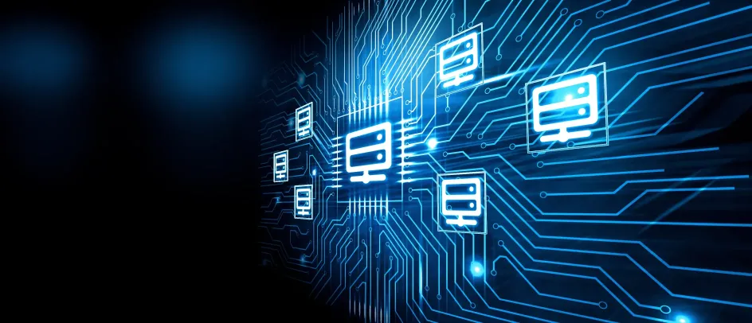
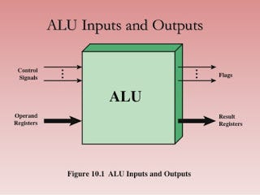
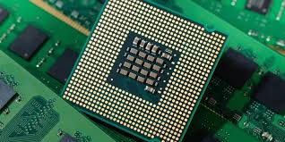
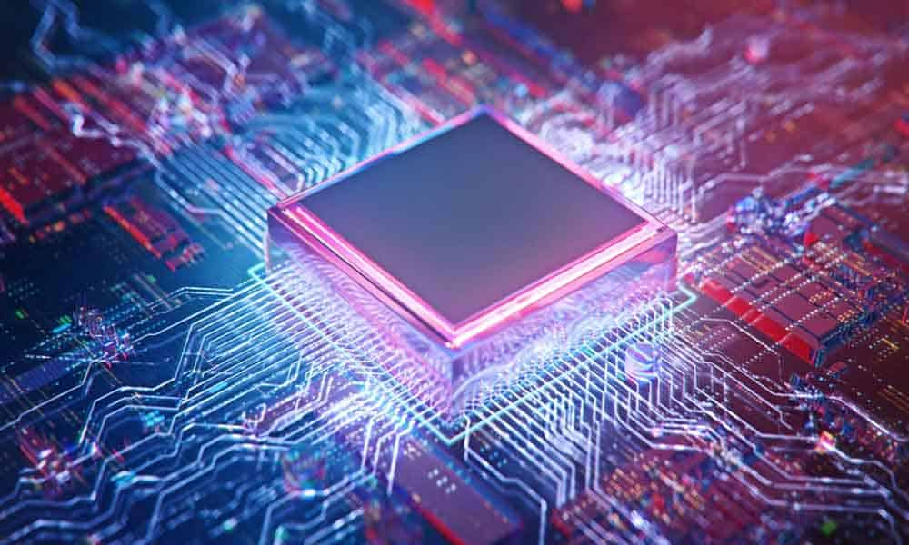
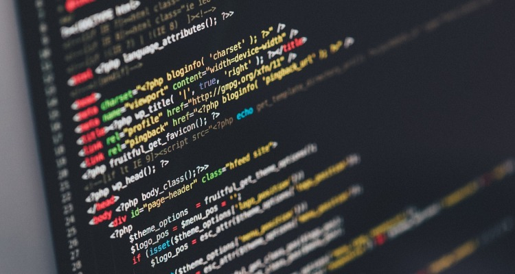

Materi Arsitekur Sistem Komputer
Kontrak Kuliah
- Berpakaian rapi dan tidak memakai sandal.
- Ijin saat terlambat maupun tidak masuk mata kuliah disampaikan sebelum perkuliahan dimulai. bisa lewat WA atau Surat, selain itu dianggap Alpha.
- Dosen terlambat lebih dari 30 menit atau tidak ada konfirmasi, maka Mahasiswa diperbolehkan meninggalkan ruangan.
- Dilarang plagiarisme Tugas, UTS, UAS!.
- Toleransi keterlambatan 15 menit.
- Penilaian ( Keaktifan 10%, Tugas 40%, UTS dan UAS 40% ).
Materi 1 ( CPU, ALU dan Register )

Apa itu CPU?
CPU atau Central Prossesing Unit adalah komponen komputer yang bertanggung jawab untuk menjalankan intruksi yang diberikan kepada komputer. CPU merupakan otak komputer yang bertanggung jawab untuk mengolah data dan menjalankan program yang diperintahkan penggunanya.
Struktur CPU antara lain :
- Control unit.
- Arithmetic Logic Unit (ALU).
- Registers.
- CPU Interconnection.

Arithmetic Logic Unit (ALU) adalah komponen inti dalam unit pemrosesan pusat (CPU) pada sebuah komputer. Fungsinya adalah untuk melakukan operasi aritmatika (penjumlahan, pengurangan, perkalian, dan pembagian) serta operasi logika yang diperlukan dalam eksekusi instruksi dalam program. Berikut beberapa peran utama ALU :
- Dapat melakukan operasi aritmatika dasar.
- Dapat melakukan operasi logika.
- Dapat membandingkan data dalam CPU.
- Dapat melakukan operasi bitwise pada data.
- Bertanggung jawab untuk mendeteksi dan mengatasi situasi overflow.
Komponen ALU terdiri dari :
- Register.
- Multiplexer.
- Dekoder.
- Rangkaian Aritmatika.
- Rangkaian Logika.
- Comparator.
- Rangkaian Overflow dan Carry.
- Bus Data.
Registers
Registers adalah sekumpulan kecil tempat penyimpanan data yang merupakan bagian dari prosesor komputer. Berikut jenis register umum meliputi :
- Memory Address Register : Menyimpan alamat memori yang akan diakses.
- Memory Data Register : Menyimpan data yang dibaca dari atau ditulis ke memori.
- Memory Buffer Register : Menyimpan data yang dapat dibaca atau ditulis dalam memori komputer.
- Program Counter : Menyimpan alamat instruksi berikutnya yang akan dieksekusi.
- Accumulator : Menyimpan logika atau hasil sementara.
- Index Register : Memodifikasi alamat operan selama menjalankan program.
- Instruction Register : Menyimpan instruksi yang sedang dieksekusi atau yang akan didekodekan.
Materi 2 (GATE)
Sejarah Komputer
- Komputer Generasi I ditemukan pada tahun 1940 - 1956 dan Menggunakan Vacuum tube sebagai komponen digital. Bahasa yang digunakan masih bahasa mesin seperti ( 0 dan 1 ) dan membutuhkan ruang yang luas.
- Komputer Generasi II ditemukan pada tahun 1956 - 1963 dan Menggunakan Transitor sebagai komponen digital. Bahasa yang digunakan masih bahasa assembly dan ukuran tidak sebesar generasi I.
- Komputer Generasi III ditemukan pada tahun 1964 - 1971 dan Menggunakan IC sebagai komponen digital. Ukuran lebih kecil dari generasi II.
- Komputer Generasi IV ditemukan pada tahun 1971 - sekarang dan Menggunakan Mikroprosesor sebagai komponen digital. terdapat layar monitor yang dapat menampilkan GUI.
- Komputer Generasi Selanjutnya Berupa cloud computing dan AI.
Logic Gate
Gerbang logika atau logic gates adalah proses pengolahan input bilangan biner dengan teori matematika boolean. Logic gate ini menggunakan tabel kebenaran. Jika memiliki nilai benar (true) akan ditunjukan dengan angka “1”. Sebaliknya, jika memiliki nilai salah (false) akan ditunjukan dengan angka “0”.
Fungsi Logic Gate untuk melakukan fungsi logika dasar untuk membentuk sirkuit digital yang terintegrasi. Berikut beberapa macam gerbang logika antara lain :
- Gerbang AND (AND Gate) : Menghasilkan output 1 jika semua inputnya adalah 1; jika tidak, menghasilkan output 0.
- Gerbang OR (OR Gate) : Menghasilkan output 1 jika setidaknya satu inputnya adalah 1; menghasilkan output 0 jika semua inputnya adalah 0.
- Gerbang NOT (NOT Gate) : Menghasilkan keluaran yang merupakan kebalikan dari inputnya.
- Gerbang XOR (XOR Gate) : Menghasilkan output 1 jika jumlah input yang aktif (1) ganjil.
- Gerbang NAND (NAND Gate) : Kebalikan dari gerbang AND; menghasilkan output 0 hanya jika semua inputnya adalah 1.
- Gerbang NOR (NOR Gate) : Kebalikan dari gerbang OR; menghasilkan output 1 hanya jika semua inputnya adalah 0.
Materi 3 ( Memory )
Memory adalah perangkat atau sistem yang digunakan untuk menyimpan informasi untuk penggunaan langsung dalam komputer atau perangkat keras komputer dan perangkat elektronik digital yang terkait.
Memory hierarchy adalah konsep yang mengacu pada struktur bertingkat dari berbagai tingkatan memori pada sistem komputer. Hierarki ini didesain untuk memenuhi kebutuhan akses data yang cepat, kapasitas penyimpanan yang memadai, dan efisiensi biaya. Hierarki memori memiliki beberapa tingkatan, antara lain:
- Register : Memory tercepat yang terdapat langsung di dalam unit pemrosesan pusat atau CPU.
- Cache Memory : Tingkat memory yang terletak di antara register dan RAM yang dibagi menjadi beberapa tingkatan (L1, L2, L3), cache digunakan untuk menyimpan data yang sering diakses oleh CPU dan mengurangi waktu akses ke RAM.
- RAM : Memory utama yang menyimpan data dan instruksi yang sedang digunakan secara aktif oleh CPU.
- Mass Storage : Tingkat ini mencakup perangkat penyimpanan besar seperti hard drives (HDD) dan solid-state drives (SSD). Walaupun lebih lambat daripada RAM, perangkat ini menyediakan kapasitas penyimpanan yang besar untuk data jangka panjang.
Materi 4 ( Representasi Data Pada Komputer )
Data adalah fakta-fakta, angka, informasi yang digunakan sebagai dasar untuk pengambilan suatu keputusan, analisis, penelitian. Data dapat berupa berbagai jenis, seperti teks, angka, gambar, audio, atau video, dan dapat mewakili berbagai jenis informasi.
Data pada komputer
- Data Numerik merupakan data yang berupa angka maupun bilangan, bisa dalam bentuk integer, float dan sebagainya.
- Data Non Numerik adalah data yang bukan berupa angka maupun bilangan. Contohnya adalah data Teks, gambar dan sebagainya.
Materi 5 ( Dasar Bahasa Pemrograman )
Bahasa pemrograman adalah sebuah bahasa yang digunakan untuk menulis atau menyusun kode yang dapat diterjemahkan oleh komputer menjadi instruksi-instruksi yang dapat dieksekusi. Bahasa pemrograman ada beberapa jenis antara lain : bahasa tingkat rendah, bahasa tingkat menengah dan bahasa tingkat tinggi.
Fungsi bahasa pemrograman antara lain :
- Memudahkan Komunikasi Antara Komputer dan Pengguna.
- Membuat Aplikasi yang Kompleks.
- Membuat Kode Reusable.
- Mempercepat Pengembangan Software.
- Membuat Komputer Melakukan Banyak Tugas yang Berbeda.
Bahasa Assembly adalah bentuk bahasa pemrograman yang paling rendah dalam hal tingkat abstraksi. Bahasa mesin menggambarkan instruksi dalam kode biner yang secara langsung dapat dieksekusi oleh komputer.
Bahasa tingkat rendah : Bahasa yang memberikan kontrol lebih langsung atas perangkat keras komputer. Bahasa ini mudah dipahami oleh manusia, contohnya : ( C dan C++ )
Bahasa tingkat menengah : Bahasa ini menawarkan tingkat abstraksi yang lebih tinggi dibandingkan bahasa tingkat rendah. Bahasa ini digunakan untuk mengembangkan perangkat lunak sistem, contohnya : ( Ada dan Rust )
Bahasa tingkat tinggi : Bahasa ini sangat jauh dari bahasa mesin.Bahasa ini sangat mudah dipahami oleh manusia dan lebih banyak digunakan untuk aplikasi web, aplikasi mobile, atau aplikasi data science., contohnya : ( Pyhton, Ruby dan JavaScript )
Materi 6 ( Compiler, Interpreter, Linker )
Translator
Translator biasanya merujuk kepada program atau perangkat lunak yang mengubah kode sumber dari satu bahasa pemrograman ke bahasa pemrograman lain. Ini biasanya dilakukan untuk beberapa tujuan seperti portabilitas, optimisasi, atau integrasi.
Ada 2 jenis translator utama pada bahasa pemrograman, yaitu Compiler dan Interpreter.
Compiler adalah jenis translator yang menerjemahkan seluruh kode sumber dalam satu kali proses ke dalam bahasa mesin. Contohnya seperti : ( C, C++ dan Ada )
Fase pada compiler ada 2 yaitu Fase Analisis dan Fase Sintesis.
Interpreter adalah jenis translator yang membaca dan mengeksekusi kode baris demi baris saat program berjalan. Ini berarti kode sumber tidak diterjemahkan ke dalam bahasa mesin atau kode antara sebelum dieksekusi. Contohnya seperti : ( JavaScript, Pyhton dan Ruby )
Linker adalah menggabungkan berbagai library external dengan object file untuk menghasilkan sebuah program. kode program C biasanya butuh file library external. Sebagai contoh, untuk menampilkan teks kelayar dalam bahasa C perintahnya adalah printf(“Hello World”). Untuk bisa memproses perintah printf(), C butuh sebuah file external, yakni stdio.h.
Linker-lah yang akan menggabungkan hello_world.obj dengan stdio.h. Hasil akhirnya akan berupa program berextension*.exe. Karena file source code saya buat sebagai hello_world.c, file programnya akan bernama hello_world.exe. Dengan men-double-klik file hello_world.exe, program kita sudah langsung berjalan.